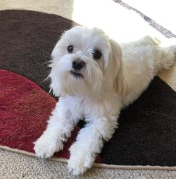

Blog for 9/11/2020:
What do you want, Cody?
Do you guys have pets? I do. A little Maltese named Cody.
He is the goofiest, most annoying and amazing dog in the world. To me of course. He barks at
everyone and everything, he’s either super energetic or extremely lazy, and he LOVES cuddles. His
favorite foods are carrots, cheese sticks, and whipped cream. He dislikes taking baths or getting
combed, and every once and a while, he has the urge to reach some open space and just run in circles
until he’s exhausted. His manipulative skills are S-class and his primary form of communication is
‘booping’ our legs with his nose.

When he comes to ‘boop’ our legs, we always know he either needs to go outside, wants to play,
or wants a treat. So, we always ask, “What do you want, Cody?” ‘Want’ is like, his keyword. He hears
that and his face lights up. He notices that we are catching on to his request. We then ask, “Do you want
‘x’?” where ‘x’ can be ‘to go potty’, ‘to play’, or ‘carrot’. Depending on which one he starts jumping and
wagging to, we deduce his request.
But sometimes, it’s tough to understand what Cody wants. Sometimes, when I ask him all the keywords,
he only half-heartedly reacts to them. Even after I take him out and hand him a baby carrot (which he only
eats half of), he asks for something.
In the end, I just sit next to him and let him cuddle in my lap, but I always wonder what he really
wants. Do non-human animals have desires that go beyond instinct or emotion? If they do, they really have no
way of telling others beyond their own species; it’s a language barrier that we can’t bridge.
There’s this old dude, Peter Singer,
who talks about humans and non-humans a lot. He better defined
the term “speciesism", which is holding a bias against a being due to the species they belong to. So, for
example, saying that ‘beings who have complex rationality and self-reflection, as well as a desire to fulfill
long term goals, should not be killed’ isn’t speciesist, even if in this category of being, normal humans would
be the only ones to fit. What is speciesist is saying that it puts humans who may lack those qualities (like
those who may have a disability) above other non-humans.
That sounds really bad, but it’s the most basic example that is literally always used. My problem with
this: how are we supposed to know whether non-humans are actually not in that category? Again, Cody and I, as
well as most non-human to human relationships out there, probably only communicate through reactions to short
phrases. How do we really know what non-human animals want? Science is continually finding the intelligence of
animals to be amazing, and I don’t doubt it.
I dream one day, Cody will go Life of Pets on me and ask what my favorite foods are. I’m sure everyone does.
That’s why Disney makes money.
(Yes I know Life of Pets is from Illumination not Disney whatever it just fits ok)